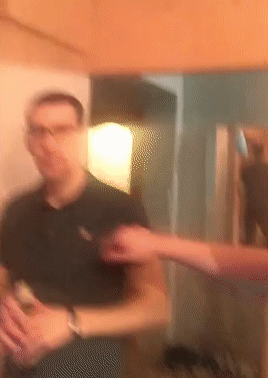

Димооооон, поздравляю тебя с днюшкой, не будь Танюшкой. Чтобы счастье было море, а денюжек океанчик и маленький чемоданчик.
От души я поздравляю и маме твоей счастья я желаю. Не болей и не хварай.
Много не пей и не кури, а лучше девочек ЕБИ. Денюжки лопатой ты греби и на
ДОМИК с ЯХТОЙ ты копи. Поздравляю с Днём рождения.
От Ихарёчка
Друг, поздравляю тебя с Днем рождения!
Желаю, чтобы в твоей жизни было больше
ярких и красочных моментов, пусть цели к которым ты стремишься - осуществляются.
Оставайся всегда душевным человеком, но не душным!!!
Пусть тебя окружают лишь верные, надежные и честные друзья или одногруппники)!
От Артема
Ну что, по старой своей традиции, я буду не измениен в своему поздравлению!
Желаю тебе счастя, здоровя, что бы все что ты запланировал, что бы это не было,сбылось
,чтобы нравственость и совесть не стояли у тебя на пути.
От Богдана